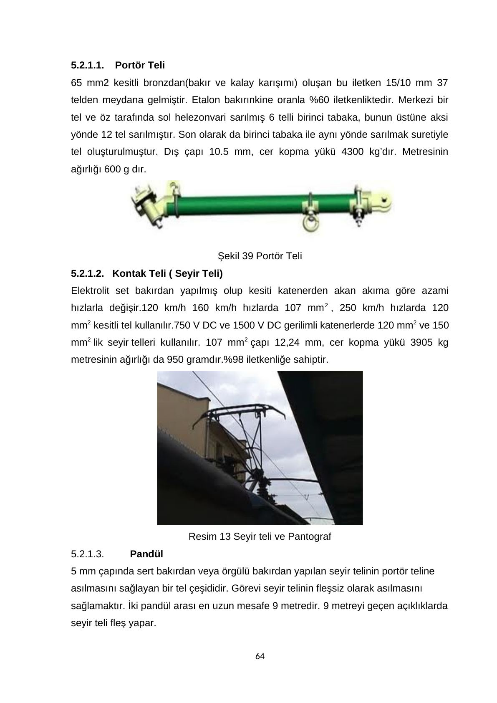
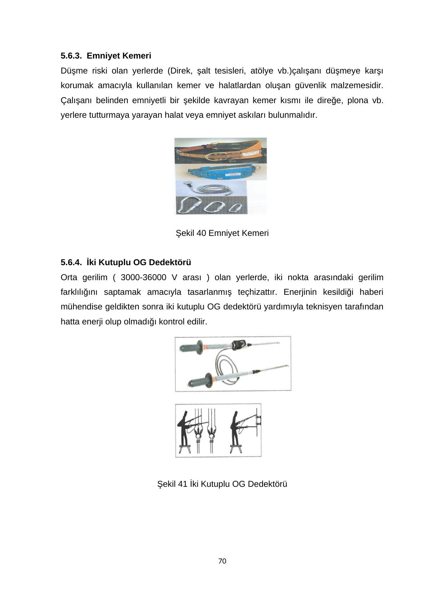

· STAJ
INTERNSHIP Summer Internship: TCDD YHT Electrification, Catenary System and High-Voltage Occupational Safety (internship report)
STAJ – Yaz Stajı · 02.09.2014 · 14.11.2026
This post is the electrification section (12 pages) of a 70-page report written in 2014 by a friend for a summer internship at the TCDD YHT Regional Directorate, Facilities Directorate: occupational safety in medium- and high-voltage installations, the catenary system and its equipment, geometric characteristics, separation zones and maintenance equipment. The report's telecommunications and signalling sections are in separate posts. Personal information has been removed; the original pages can be downloaded as a PDF at the end of the post.
5. Electrification Systems
5.1. Safety
Entry into medium- and high-voltage installations by anyone other than the assigned personnel is prohibited. Other persons may enter the installations only with special permission, under the supervision of an authorized employee, and while using personal protective equipment.
Operating circuit breakers and disconnectors is not considered work under voltage. When operating disconnectors that must be operated with a switching pole (stanka), the pole must always be used. When operating both pole-operated disconnectors and mechanically levered disconnectors, insulated gloves, a hard hat, insulated footwear and, depending on the characteristics of the installation, a portable insulating mat (2x1 m) or stool must be used.
Conductors energized at medium voltage must not be touched with insulated gloves, and work must not be carried out on these conductors with tools that only have insulated handles. Work in the switchyard must be performed on an insulating mat with all measuring instruments grounded, and the coaxial cable shield and the tuner console must be properly connected to ground. Work on a live terminal must NEVER be carried out, and the terminal must not be opened, unless the safety of the ground connections of the drain coils (sızdırma bobinleri) has been verified and the line has been de-energized.
All work in MV and HV installations shall be carried out after the following procedures. Before starting any work, a work order must always be issued.
To de-energize the installation to be worked on, first the circuit breakers and then the disconnectors shall be opened.
It shall be verified that each phase of the circuit breakers and disconnectors is individually open. In MV switchgear installations, there shall be an interlock between the cubicle doors and the busbar disconnectors. This interlock shall prevent the cubicle door from being opened before the busbar disconnectors of that feeder are opened.
To secure the installation, SAFETY CARDS, WARNING AND NOTICE signs shall be placed on the switching devices and control mechanisms.
The absence of voltage at the work site shall be verified on each of the conductors using special devices such as a neon-lamp voltage-detecting pole (stanka) or a line gun. Testing by throwing something by hand onto bare conductors is prohibited.
Once the absence of voltage is established, local grounding and short-circuiting shall be performed as close to the work site as possible and on all branches that could feed the work site. This procedure shall be applied in exactly the same way even if the earthing disconnectors have been closed.
The procedure described above shall also be applied to line sections that have been disconnected from the energy sources, because these sections may have been subjected to atmospheric overvoltages or induction effects.
For grounding and short-circuiting work, insulated gloves, a hard hat, insulated footwear, an insulating mat or insulated stool, and poles (stanka) shall be used.
All blades of the earthing disconnector must be closed.
Work Area: shall be delimited with signs such as plates, flags, pennants, cords and barriers.
Where the installations allow, signs prohibiting approach shall be placed on the parts that remain energized.
On feeder cubicles where there is a possibility of back-feed, warning signs bearing the text "This feeder may be energized from the opposite direction" shall be posted.
Where static capacitors are present, the capacitors shall be discharged before every operation. Even if a discharge device is present, all terminals of the capacitors must be grounded before any work.
The Occupational Safety Form (İGF/1), which authorizes the start of work, must always be issued.
In MV and HV installations, the transition resistances of the visible portions of the grounding conductors that connect metal parts a person may come into contact with, such as cubicle doors, circuit breaker chassis and disconnector levers, to the earthing network shall be checked periodically, and the results of this work shall be recorded.
The installation shall be re-energized only after the "WORK COMPLETION DECLARATION" Form İGF/2 has been completed and handed to the operating technician.
The installation shall not be energized until safety materials such as signs, flags, pennants, plates, hazard warning tape and safety-card signs, as well as the short-circuit grounding connection, have been removed.
Written plates showing which feeder each circuit breaker and disconnector in the HV switchyards belongs to shall be posted at suitable places on the equipment so that they can be read from a distance. The names of MV feeder cubicles, single-line diagrams and the switching instruction shall be posted as a plate on the cubicle door. In addition, plates indicating the feeder names shall be posted on the rear fence of the cubicle and beneath the bushing insulator outside the building. A single-line diagram of the substation (TM) at least 50x100 cm in size shall be posted in the control room.
After work in MV cubicles is finished, the necessary safety measures shall be removed, the protective doors shall be closed, and only then shall the equipment be energized.
For an auxiliary service transformer without a circuit breaker on the MV side, de-energization shall be performed, starting from the LV side, by first opening the switching devices and then the disconnecting devices on the MV side.
Matches or other open-flame lighting means shall not be used when checking the oil level of a transformer.
When it is necessary to inspect the oil reservoirs or tanks of equipment such as power transformers and reactors in service for any reason, the tank must not be entered, and no welding shall be performed on the installation, without first taking the necessary safety measures (draining the oil, circulating the air inside the tank, wearing a gas mask, etc.).
During work, the necessary interlocks must be in place on the devices that supply LV to instrument transformers (synchronization plugs, etc.). In addition, the MV and HV terminals of these transformers shall be grounded.
While current transformers are in service, the necessary precautions shall be taken so that their secondary circuits are not left open. (The secondaries of current transformers shall be short-circuited through the instruments they feed.) The secondaries of voltage transformers shall be left with their terminals open if no instrument is connected.
MV fuses in transformer substations shall be replaced with originals only after the disconnector has been opened and the voltage cut off, and after it has been verified that there is no voltage on either side of the fuse.
If a fuse has to be replaced in cases where it is not possible to cut the voltage, a fuse-replacing pliers (sigorta değiştirme pensi), hard hat, insulated gloves, and an insulated stool or insulating mat shall be used.
In switchyards, materials longer than a person's height, such as poles (stanka) and ladders, shall be carried parallel to the ground.
After opening disconnectors and similar devices, fuses shall not be replaced without taking occupational safety measures in cases where there is a danger, such as contact with parts that remain energized or arcing.
For pole-mounted distribution power transformers, whatever the type of work to be performed, the voltage shall be cut first from the LV side and then from the MV side. After voltage checks show that no voltage is present, grounding and short-circuiting shall be carried out and work shall begin.
For outdoor-type fused disconnectors, fuse replacement shall be carried out after the fuse has been de-energized from both sides and this has been verified.
When replacing the fuses of MV power transformers, the LV breakers shall be opened first and then the MV disconnectors.
The lower and upper ends of the fuse shall be grounded and short-circuited with the other phases, and then the fuse shall be replaced.
If there is voltage on the upper contacts while the disconnector blades are open, that pole will be energized; in that case, if fuse replacement is to be carried out, the rules for work under voltage shall be applied.
5.2. Catenary
The catenary system is an overhead line system in which the energy required to operate trains is carried from the substations by various carrying arrangements. It is the electric traction overhead line that supplies electrical energy to electric vehicles in all climate and environmental conditions, on the various geometric alignments of the railway, uninterruptedly at the selected maximum speed, minimizing wear on the locomotives' current-collecting pantograph and on the contact wire, without endangering life and property.
The train takes energy from the catenary through the pantograph. The current completes its circuit through the rails and return cables.
Voltages used in electrification installations implemented to date: - 750 V DC: Current type used on metro lines.
- 1500 V DC: Abandoned in most countries.
- 3000 V DC: Abandoned in most countries.
- 15 kV 16 2/3 Hz AC: Current type used in Scandinavian countries.
- 25 kV 50-60 Hz AC: Generally preferred.
- 25 kV–50 Hz AC: Current type used in our country.
- 50 kV 50–60 Hz AC: Used on lines where heavy loads are transported.
Of these, catenary systems supplied at 750, 1500 and 3000 V DC are used in urban rail systems, that is, in metros.
Medium-voltage AC supply systems are used in electric train operations that require more power, in which intercity passenger and freight transport is carried out. The most widespread and preferred supply system in the world has been 25 kV-50 Hz.
The application of this supply system in Ankara is the Sincan-Kayaş suburban line.
5.2.1. Equipment of the Catenary System
The equipment of the catenary system consists of the following: a carrying conductor (messenger wire), a contact wire, droppers that suspend the contact wire from the carrying conductor, other connecting wires (feeder and earthing wires), poles that carry the catenary conductors and bracket (cantilever) fittings, and equipment such as earthing, warning signs and height-limiting portals.
The line and the contact wire were inspected by raising the pantograph of the catenary inspection car and observing at the same time.
5.2.1.1. Messenger Wire

This conductor, made of bronze (a copper and tin alloy) with a cross-section of 65 mm2, consists of 37 strands of 15/10 mm. Its conductivity is 60% of that of standard copper. It has a central wire, a first layer of 6 wires wound in a left-hand helix around the core, and 12 wires wound over this in the opposite direction. Finally, the wire is completed by winding in the same direction as the first layer. Its outer diameter is 10.5 mm and its tensile breaking load is 4300 kg. Its weight per metre is 600 g.
Figure 39 Messenger Wire
5.2.1.2. Contact Wire
Made of electrolytic copper, its cross-section varies with the current flowing through the catenary and the maximum speeds. A wire of 107 mm2 is used at speeds of 120 km/h and 160 km/h, and a wire of 120 mm2 at 250 km/h. Contact wires of 120 mm2 and 150 mm2 are used in catenaries at 750 V DC and 1500 V DC. The 107 mm2 wire has a diameter of 12.24 mm, a tensile breaking load of 3905 kg and a weight per metre of 950 grams. It has a conductivity of 98%.
Photo 13 Contact wire and Pantograph
5.2.1.3. Dropper
It is a type of wire made of hard copper or stranded copper, 5 mm in diameter, that suspends the contact wire from the messenger wire. Its function is to keep the contact wire suspended without sag. The maximum distance between two droppers is 9 metres. In spans exceeding 9 metres, the contact wire sags.
5.2.1.4. Poles and their fittings:
Concrete and steel poles are used in TCDD catenary installations. On main lines the catenary is built in mechanically separate sections of 1200-1400 m and is equipped with a tensioning device. The carrying wire and the contact wire are tensioned with a constant force at every temperature.
Photo 14 Poles and Their Fittings
Contact wire heights at certain locations between km 393-398 were checked, compared with the static measurement results and adjusted. The contact wire was raised by 2 cm.
Photo 15 A view from the contact wire adjustment
5.3. Geometric Characteristics of the Catenary System
5.3.1. System Height:
This is the vertical distance between the contact wire and the carrying wire at the pole. It is determined according to the route conditions and the selected speed. In our country the system height is 1.4 metres. Under bridges, at tunnel entrances and in tunnels these distances are 0.90-0.60-0.30 m. In tunnels a minimum of 0.30 is used. In high-speed train systems it is 1.8 metres.
5.3.2. Contact Wire Height
This is the vertical distance between the contact wire and the rail head. Under normal conditions in our country the contact wire height is 5.75 metres. However, it drops to as low as 4.95 metres on bridges and in tunnels. At road level crossings this distance rises to as much as 6.20 metres.
5.3.3. Pole Spans
Pole spans must be 22.5 m - 27 m - 31.5 m - 36 m - 40.5 m - 45 m - 49.5 m - 54 m - 63 m, depending on the geometry of the track (straight or curve radius) and on wind exposure.
5.3.4. Stagger (Dezekseman)
To prevent the carbon strip of the pantograph that rubs against the contact wire from wearing at always the same point, and to distribute the wear evenly, the contact wire is displaced from the track centreline at each pole; this is called stagger (dezekseman).
For this purpose the contact wire is displaced equally to the right and left of the track centreline. The stagger must be ± 400 mm in electric train operations with a 1950 mm pantograph, and ± 200 mm with a 1600 mm pantograph.
I went out on maintenance and repair with the catenary car for the last time. Stagger adjustment was to be carried out on the poles. For this, the engineer contacted the remote control (telecommand) centre and asked for the power to be cut. When our work was nearly finished, following low-voltage reports from other trains, the engineer went back to the telecommand centre and asked them to change the transformer on the other side of the line from tap 1 to tap 2, and the problem was solved.
5.4. Separation Zones in Catenary Installations

Catenary lines, with the contact wire and messenger wire together, are arranged as mechanically separate sections of 1200 - 1400 m. Each such section is called a stage (etap). Continuity of electrical energy is ensured by electrically joining the stages.
5.4.1. Equipment Zone
Catenary lines consist of mechanically separate stages. For the pantograph to continuously draw energy while sliding along the catenary line, electrical continuity is required in the catenary lines. The zone where successive stages are electrically connected by conductors for this purpose is called the equipment zone.
5.4.2. Sectioning Zone
The zones where the electrical connections of the stages at their ends and beginnings, which maintain the continuity of electrical energy in catenary lines, are made via disconnectors (sectionalizers) are called sectioning zones.
This section was created to facilitate electrical switching operations for operation and maintenance reasons. To electrically isolate the catenary lines, in 25 kV AC systems a distance of 50 cm is left between two catenary stages at the centre pole.
5.4.3. Anti-Sway (Antişöminman) Zone
Because of the horizontal force the pantograph applies while rubbing against the contact wire, depending on train speed, the contact wire may undulate or wander. To prevent this and to spread the mechanical stress in the conductors more evenly, an anti-sway zone is created between the two tensioning arrangements, exactly in the middle of the stage.
Two kinds of zones are created: messenger wire anti-sway and contact wire anti-sway.
- Messenger wire anti-sway: An anti-sway cable with the same characteristics as the carrying wire (65 mm2 bronze strand) is fixed to the carrying wire on the centre pole.
- Contact wire anti-sway: This is fixing the contact wire to the messenger wire after the messenger wire anti-sway has been made. The connection, made with mm2 copper cable, is formed at spans of up to a maximum of 54 m and equal to it, 9 m lower for smaller spans, and over 18 m. The telecommand centre keeps control of the catenary line and the substations. Even the slightest fault in the systems is visible in the SCADA system used there. Problems can be corrected at the centre from a computer, but in some places they must be corrected by hand. In such places, on the announcement of the officer at the centre, the nearest crew reaches the problem area and corrects the problem.
Photo 16 Telecommand centre SCADA system
5.5. Neutral Section
Because two neighbouring substations are fed from different phases, their potentials on the catenary line differ; the de-energized, 30 m long catenary section that separates and isolates the energy of these substations is called the neutral section. Neutral sections are also created for ease of electrical switching operations, and in front of substations with V-connected transformers because the two power transformers there are fed from different phases.
Neutral sections appear in red in the SCADA system.
5.6. Equipment Used in Catenary System Maintenance
5.6.1. Catenary Car

The catenary system wears over time and requires maintenance. This maintenance is carried out by means of the catenary car. During maintenance, which is generally done at night, the power is always cut. The vehicle to carry out maintenance must carry the necessary equipment. Safety measures must be taken first during this maintenance. The vehicle must carry at least one engineer, one driver and, depending on the job, enough personnel.
Photo 17 Catenary Maintenance Car
I researched the safety equipment of the catenary line and, since it was the last day of the internship, carried out my clearance procedures. I completed my 20 working days of internship, both in theory and by observation, covering the maintenance and repair work in both the substations and the catenary line of the high-speed train and the Ankara suburban network, and the safety measures to be taken.
5.6.2. Earthing Tool
Before entering the area to be maintained, the engineer has the power switched off. Then two of the technicians get off the vehicle and carry out the earthing. With this tool, the area is grounded against the 27.5 kV energy as a precaution against every eventuality.
Photo 18 Earthing Tool
5.6.3. Safety Harness

This is a safety item consisting of a belt and ropes used to protect the worker from falling in places with a risk of falling (poles, switchyards, workshops, etc.). It must have a belt part that securely grips the worker at the waist, and a rope or safety straps used to attach it to the pole, a pylon or similar places.
Figure 40 Safety Harness
5.6.4. Two-Pole MV Detector
This is equipment designed to detect the voltage difference between two points in places with medium voltage (between 3000-36000 V). After the engineer has been informed that the power has been cut, the technician uses the two-pole MV detector to check whether there is power on the line.
Figure 41 Two-Pole MV Detector